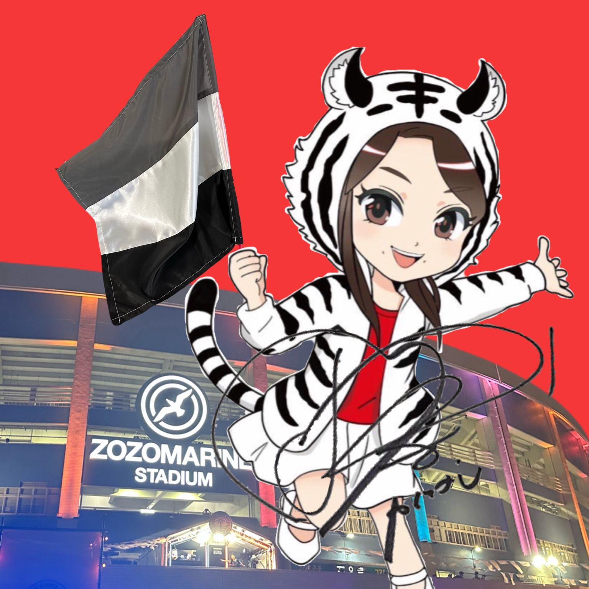

PERSONAL SPACE — EST. 2026
Personal
Archive.
A collection of interests, moments, and memories.
ABOUT / PROFILE

PEACH.
PERSONAL ARCHIVE / JAPAN
FAVORITES / PEOPLE
百田夏菜子 / 芳根京子 / 早坂響 / 桜ひなの / 白川千尋 / 宇佐美ことは / 的野美青 / 松田真実 / 西橋奈未
FAVORITES / GROUPS & TEAMS
ももいろクローバーZ / 千葉ロッテマリーンズ / いぎなり東北産 / Pallet Parade / UtaGe